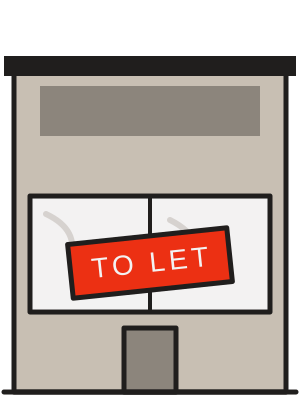

THE OPERATOR’S TOOLKIT · WEDNESDAY 2
Is this street worth the lease?
Score the five forces on one street before you sign. One walk, ten minutes, a number out of 25.

HOW IT WORKS
Score each force from 1 to 5
Each force is something on the street that takes a cut of every £1 your site takes.
1
The force is weak. It barely touches your margin.3
It’s there. Price it into the plan.5
It’s strong. It takes its cut every week, whatever you do.
Walk the street at the hour you’d trade. Write down what you saw next to each score: a score without evidence is a guess.
FORCE 1 · SUPPLIERS
Who can push your costs up?
Your food suppliers, your landlord and the local labour market.
SITE 10 FROM MONDAY: EACH £1 OF SALES
Food and drink30p
The team40p
The landlord20p
Gone before anything else90p
1
Rent under 10% of forecast sales; easy to hire; two or more suppliers for key lines.5
Rent 20% or more, upward-only reviews; hard to hire; one supplier for key lines.Check: rent ÷ forecast sales, and how long local job ads stay open.
FORCE 2 · BUYERS
Who can push your price down?
Guests who compare on price, and delivery apps that take up to £6 of a £20 order.
1
Guests choose you for the offer; delivery under 10% of sales.5
Guests compare on price every visit; apps 25% or more of sales.Check: nearby menu prices; delivery’s share of your sales.
FORCE 3 · SUBSTITUTES
What else feeds them?
Not another café: the meal deal, the office canteen, lunch from home.
1
Nothing comparable on the guest’s path.5
Several cheaper options on the route guests take at your peak.Check: walk the route your guests take at your peak hour.
FORCE 4 · NEW ENTRANTS
How easily could a rival open?
Every empty unit nearby is a café that could open next year.
1
No vacant units nearby; high fit-out cost.5
Several TO LET boards within three minutes’ walk, at low rents.Check: count the boards; ask the agent what each unit may be used for.
FORCE 5 · RIVALS
Who’s already fighting for the guest?
The café opposite cuts its coffee from £3.40 to £2.90. Now you have to answer.
1
No direct rival within three minutes’ walk.5
Three or more direct rivals, or one discounting hard.Check: count the same-offer sites and note their prices and offers.
ADD THEM UP
Two streets, two very different leases
FORCESTREET ASTREET B
Suppliers35
Buyers24
Substitutes24
New entrants24
Rivals34
Out of 251221
5–12Favourable
13–18Workable: price the forces in
19–25Hostile: more sales just to stand still
YOUR STREET
Fill it in
FORCE1–5WHAT YOU SAW
Suppliersrent ÷ sales, hiring
Buyersprices nearby, delivery share
Substitutesmeal deals, canteens on the path
New entrantsTO LET boards nearby
Rivalssame offer, their prices
Total/ 25
Your highest score is the force to plan for first.
WEIGHING MORE THAN ONE SITE?
Comment SCORECARD for the multi-site version.
Every site and every lease you’re weighing, scored side by side: a guide for each force, the cushion over break-even, and what to do next.
Watch Monday’s episode of The Operator’s Ledger, “Five forces”, on the WRW Hospitality page.

WRW HOSPITALITY
Wesley Williams
Illustrative figures. Free for use in your own business; not to be resold, rebranded or redistributed.